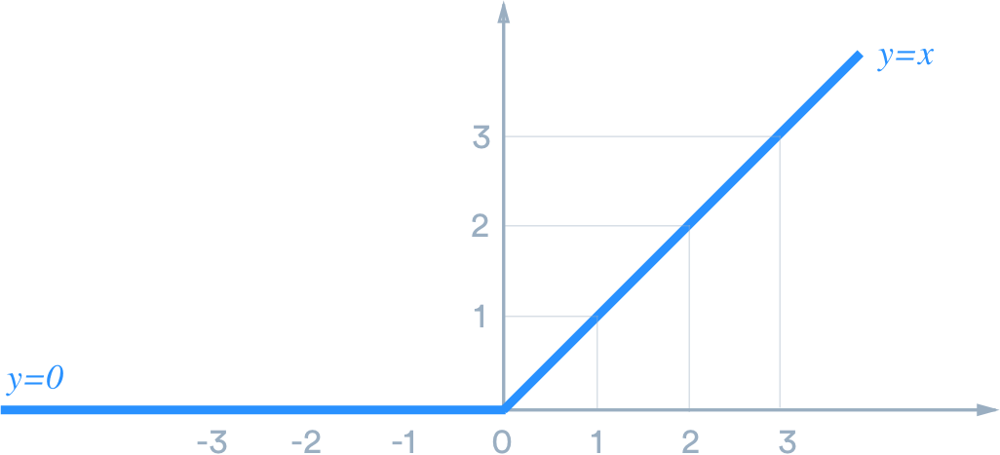

Objectives For Lesson 23.3
- Neural Networks & Deep Learning
Introduction to Neural Networks
Basically, neural nets were inspired by how our brains function:
The neuron's axos is what it uses to send signals to other neurons.
Denrites receive information from the cell body.
Synapses are sensors that receive signals from other neurons.
This is how our brains work:
- Brain sees an image through your eyes.
- Your brain recognizes fur, pointy ears, whiskers.
- Your brain then acknowledged that it is a cat (I know there are other things that identify a cat but let's keep our example simple).
Likewise, we mimic the overall behavior in our code to do the same thing:
- We scan a cat image into a computer.
- The computer notices distinct vectors in on an image. Perhaps it identified fur, pointy ears, and whiskers like a humans do.
- But unlike a human, computers are only good with numbers. So if it identifies fur, it means True or 1. Then pointy ears triggers another 1, and whiskers triggers another 1. If it doesn't notice anything, it means False or 0.
- If all three parameters are 1, we could have a function that says if all 3 parameters are 1, it is a cat and we output as True. If not, False.
- The entire system of taking inputs, and determining an output, as a single unit or entity, is called a perceptron. In-between, we have models or step-functions (activation function) to determine a result.
Of course, the example I give is simple. But if you want to classify if a skin imagery is cancerous or not, you have more than 100 million parameters to determine.
Perceptron
Actually, we are using perceptrons without realizing it:
- Logical operators
- AND, means all inputs must be True(1) to output True(1). Otherwise, False(0).
- OR, means if any of the input is True(1), output True(1). Otherwise, False(0).
Then, what is a neural network?
Layers of neurons (perceptrons) connected together to form decisions or classification of results.
The slides given by the school (slide 8) says that neurons are kind of similar to log regression. But we know that log regression gives decimals. Why use log regression rather simple True or False?
Because True or False gives us no room to correct and train our systems. It's either 100% correct or 0%. The highest value of a log is 1, and the lowest is 0 (remember your high school math?), and in-between are all decimals. If we know how close are we to True (1) or False (0) through decimals, we can correct models to achieve a better result.
Backpropagation
We feed errors rates into a system, then tweak our algorithms or parameters to improve accuracy. Intuitively, when you come to me to correct code, I always break it down and see what kind of errors took place. I fix an error at a time.
Similarly, this process works in deep learning. The difference is computers are mitigating errors on a larger scale.
Tensorflow Playground
Tensorflow is what we use to for machine learning purposes. It's a library developed by Google for all sorts of data science projects, especially neural networks.
Goggle has developed a playground for us to get acquainted with Tensorflow here: Tensorflow Playground
When you visit the playground, you can see a dashboard with lots of control and parameters. Let's break it down somewhat:
- The top bar is a generic control panel for training.
- Play button when your formula starts training.
- Epoch is the time transpired that the model has been working.
- Time to train a model is actually a pivotal part of ML. Of course, this is a playground, and so it's supposed to be quick, but I've heard cases where training data took months.
- Learning rate is a numerical parameter which allows the algorithm to adjust itself. Basically, it's adjusting the weight in a linear equation.
- Activation function is a mathematical function which is applied to incoming data to define an output. Usually, the outputs are binary, either True or False, Yes or No. It can get more complicated than this but we'll rest our case here:

- The above is missing ReLU, which stands for rectified linear unit.
- 
- Regularation and Regularization rate is to prevent overfitting.
- L1 is called Lasso Regression.
- L2 is called Ridge Regression.
- The side bar on the left manages the data parameters.
- They don't tell us what kind of data this is, so we assume this data as random coordinates in a bi-dimensonal scale.
- Features are the dimensions you want to define in your data set. Example. supposed you want to identify cats and dogs by 2 features, height and weight.
- Hidden Layers are the set of rules you want to define to classify the data.
- Imagine the blue dots are cats and the orange dots are dogs. This data is collected in both X1 and X2 as weight and height.
- Notice that each neuron node is a singular line? It's binary classifcation, where one neuron determine disect the graph horizontally, while the rest disect it with slants.
- The default activation function here is hyperbolic tangent. Looking at the graph above, you have three distinct values, -1, 0, and 1. The white region denotes 0, while -1 denotes orange and 1 denotes blue. Zero is the boundary where you want to separate between cats and dogs.
- Why 2 hidden layers? If we remove the second layer, the output would show a "triangular shaped" output. That's because we use lines to draw, and the second layer is to smoothen the edges out for a better error approximation.
- Output is self-explantory. You want to have a visualization of how you're classifying your data.
What are you looking for in this playground?
Comparisons between different activation functions and how fast it can train your data properly.
Keras Intro
Keras is an open-source neural-network library which access different ML libraries like Tensorflow, Microsoft Cognitive Toolkit, Theano and more. This is to:
- Simplify codebase and run different ML libraries from one location.
01-Ins_One_Hot_Encoding
We'll use the Jupyter notebooks for our class, but have your Keras and Tensorflow libraries installed in your environment.
This is our training data:
- Sepal and petals are part of a flower. In our use-case, we are using their length and width to determine the flower class.
- With our trained data, we want to categorize other flower in their class:
- iris-setosa
- iris-versicolour
- iris-virginica
- Neural nets can't take strings, so we categorize the classes into numeric placeholders:
- 1: iris-setosa
- 2: iris-versicolour
- 3: iris-virginica
- However, converting them into numbers isn't enough. For speed and efficiency, we translate them into binary matrices using
keras.utils.to_categorical.
02-Evr_First_Neural_Network
So we want to create one first neural network to classify data. Before we begin, here are some important notes:
- The goal isn't to make you a mathematician or a statistician. You will see from this exercise that the mathematical heavy-lifting is done by scientists around the world, and your job is to use them in your use case.
- Build prototypes to simulate your model. Otherwise, it's very difficult to validate accuracies.
Let's get started with some sample data:
sklearn.datasets.make_classificationcreates sample data for you. You can read up the description here: https://scikit-learn.org/stable/modules/generated/sklearn.datasets.make_classification.htmlsklearn.model_selection.train_test_splithelps you to split data into 25% test size and 75% training size by default: https://scikit-learn.org/stable/modules/generated/sklearn.model_selection.train_test_split.html- We'll create our sequential model with
keras.models.Sequential: https://keras.io/getting-started/sequential-model-guide/ - Sequential means data is flowing from one layer to the next in sequence.
- Next, we'll add a
Denselayer (stands for densely-connected NN layer): https://www.tensorflow.org/api_docs/python/tf/keras/layers/Dense - In layman terms, every input is connected to every node in the hidden layer.
- For the actual classification, we are going to apply softmax classification, and the number of classes (or labels) within our classification.
- In layman terms, Softmax extends the probability for multi-class scenario just like how logistic regression does.
The above determines the model architecture in our activity. Next, we want to compile the model using a loss function and optimizer.
- Optimizers are algorithms which updates weights and biases to reduce the error.
- Adam stand for Adaptive Moment Estimation. You can read up the white paper here: https://arxiv.org/abs/1412.6980
- Loss function are iterative processes which mitigates errors by steps.
- Use categorical crossentropy for categorical data and mean squared error for regression.
- Metrics is the type of output you want from your model. It can be:
- Binary accuracy
- Categorical accuracy
- Many types of categorical accuracies, and many more.
Once we are done with compilation, we want to train the model for our data.
Important:
If your Jupyter notebook refuses to run while training your data, and the error logs state this problem:
OMP: Error #15: Initializing libiomp5.dylib, but found libiomp5.dylib already initialized.
This means, your local machine must include the following code:
import os
os.environ['KMP_DUPLICATE_LIB_OK']='True'
The above error is to protect your system because processing data is a heavy load, and your compiler is preventing your machine to load the same library twice within an environment.
Training your data
# Fit (train) the model
model.fit(
X_train_scaled,
y_train_categorical,
epochs=1000,
shuffle=True,
verbose=2
)
Similar to your previous ML classes, we are fitting our model with training data. This is similar to how the tensorflow playground work.
Quantifying the model
Now, we want to evaluate data with test data:
# Evaluate the model using the testing data
model_loss, model_accuracy = model.evaluate(
X_test_scaled, y_test_categorical, verbose=2)
print(f"Loss: {model_loss}, Accuracy: {model_accuracy}")
03-Evr_Deep_Learning
Again, Jupyter notebooks. We want to create a circular dataset, similar to Tensorflow Playground.
04-Stu_Moons: Your Turn
A lot of the beginning code is given, so compare with your previous activity and try it out yourself.
This is just a repeat of the processes we did previously.
05-Stu_Deep_Voice: Your Turn
We are dealing with real data right now, and this time it is to label gender to voice data.
MinMaxScaler vs StandardScaler
Ref: https://scikit-learn.org/stable/auto_examples/preprocessing/plot_all_scaling.html
Basically, we are using MinMaxScaler because the scaling compress all inliers together, and because we know we are labeling gender, we can do that.
StandardScaler works too, and it's an old answer within this same activity.
05-Stu_Deep_Voice: Your Turn
06-Ins_Saving_Models
Saving models is important because it is very computationally heavy to compile loads of data again and again. Our sample size is small with our exercise, but when you're dealing with terabytes, it's not a fun process to re-do everything again.
07-Stu_Smartphone: Your Turn
We are going to determine and label whether someone is standing, sitting, walking based on the accelerometer data collected from their smartphones. This is a multi-class classification problem.
Let's reiterate the steps for deep learning:
- Load and preprocess data, including one-hot encoding of categorical data.
- Create and fit the model
- Persist the model for later use
- Test the model's accuracy and test its performance on a validation set.
08-Ins_Kmeans
What we did previously is still supervised learning since we know what we want to label. What if we don't know what to label?
So you're collecting data into a data lake, and you're wondering if you can categorize the data. K-means allow any number of clusters to group together and using mean to determine the radius of the cluster.
Let's create a random data set with sklearn.datasets.samples_generator.make_blobs.
Reference for KMeans method: https://scikit-learn.org/stable/modules/generated/sklearn.cluster.KMeans.html
09-Stu_Kmeans
Most of the parameters are given to you. Visualize and cluster the data according to the parameters.